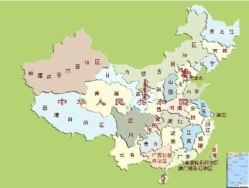

| 速读在中国大陆 |
http://photo.hexun.com/p/2005/1230/7971/b_8F73F3F9F03F7895.jpg
快速阅读在中国的发展早期最有影响的是20世纪60年代的王梦石先生和他的王氏速读出版社，创立了一套快速阅读的系统理论和训练方法，为社会培养了大批速读人才，到20世纪80年代，学员累计逾10万人。出版了10多种针对不同对象的速读教材，其中除了他自己的著作外，还有他的老师鄢慕荣撰写的《速读自练法》和他的学生刘振鲲撰写的《如何激发您的速读潜力》也非常有影响。他还研制了专门用于速读训练的目力训练机。 http://photo.hexun.com/p/2006/0106/8440/b_B955F4A477CF15E7.jpg
改革开放以来，快速阅读和高效记忆在我国也逐渐开展起来，研究、推广的成果越来越显著，这一新兴学科正在被越来越多的人所接受和喜爱。
1980年，王秉钦翻译了前苏联库兹涅佐夫和赫莫罗夫合著的《速读法》。
1981年，著名语言学家、语文教育家张志公先生指出：“现在具备一目十行、过目成诵的能力，已经不是神童才子的事，而是每个人都能并且应该具备的阅读能力。”同年，吕缜毅、黄少良、张学仁、徐道明、张建敏等合作翻译了美国速读学院院长卡特勒博士的专著《加快您的阅读》。黄少良、吕缜毅、徐建民、徐道明等编译了《汉语快速阅读》。
1982年，时任中共中央总书记的胡耀邦在同青年干部谈话时指出：“我认为，应该培养快读的能力和习惯。有许多书是可以快读的，快读的能力是可以训练出来的。”
1984年，河南省成立快速阅读研究会，并在一些学校开设了快速阅读课。
1985年，前苏联快速阅读专家库兹涅佐夫和赫莫罗夫的专著《快速阅读法》又由杨春华等译出，由中国青年出版社出版。
1986年，鲁宝元在《语文教学通讯》杂志上，连续发表快速阅读法系列讲座。 1987 年，吕缜毅主编的《快速阅读》作为锦州市记忆研究会主办的“三快”（快速阅读、快速记忆、快速作文）教材之一出版。
1988年，日本快速阅读专家芦田献之的《实用速读法》，由吴树文翻译，上海文化出版社出版。 同年，快速阅读专家、特级教师程汉杰撰写、中国铁道出版社出版了《高效阅读能力训练》。此后，他陆续编写了与中学语文教学相结合的快速阅读教材，成为我国快速阅读与中学语文正规教学相结合的开拓者，其科研成果多次获得奖励。他提出的“必须在语文教学中提高中学生阅读速度”的主张被纳入现行中学语文教学大纲。四川辞书出版社出版了李德成主编的《阅读辞典》，快速阅读法是其中有关阅读方法的重要内容。江苏省东台市师范学校也于本年度开始进行气功益智教学实验，快速阅读是其中重要内容之一。后来，薛峰在题为《开发右脑 提高素质》的实验报告中写道：“阅读能力的测试结果：1990年10月，实验班的同学在气功功能态下开始进行快速阅读记忆训练，一段时间后，全班平均阅读效率（阅读效率=阅读速度×理解记忆率）由原来的每分钟60.2字提高到689.3字，提高了10.45倍。”（《气功》杂志第13卷第六期第195页）
1989年，王彦良、陈俊杰翻译，新华出版社出版了日本快速阅读专家加古德次的《神奇速读记忆法》。同年，胡雪梅、李志强翻译了美国曼尔斯的《高效速读法》，由陕西人民出版社出版。
1990年，日本快速阅读专家佐滕泰正的《使大脑敏捷的速读法》由三联书店出版。同年，赵元编译的《超级速读术》由学苑出版社出版，此书主要参考了日本快速阅读专家佐藤泰正的《速读术》和台湾省艾天喜编著的《惊人的速读术》。
1991年，李志强、盛群力合作翻译了美国弗兰的《速读教育指南》，福建教育出版社出版。
1992年，浙江少儿出版社出版了浙江省舟山市特级教师乐连珠的《小学速读教学》。该书表述平实，深入浅出，既有理论上的提示，实验的引证；又有教学实例，具体生动，引人入胜；更有分年级训练要点和目标等等。编排的内容比较翔实，具有较好的可读性和实用性。同年，朱敏才翻译了美国谢夫特的《自学快速阅读法》，中国国际广播出版社出版。由速读专家晏茂心和蒋瑛、易明惠合著的《初中四级台阶速读训练法》也在这一年由四川少儿出版社出版。该训练法的特点是与中学语文教学同步，由易到难，由分而合，循序渐进，逐步提高，对于将速读教学正式纳入中学语文教学又是一个有益的、比较成功的尝试。安徽人民出版社还出版了沈慧等人合作的《高效阅读》一书。
1993年，知识出版社出版了程汉杰、石鼎风编著的《超快速阅读法》。它的特点是不仅有一般的快速阅读法，而且有各种文体的快速阅读法。山西教育出版社还出版了由王宇鸿等主编的《现代快速系列学习方法》，快速阅读是其中的重要内容之一。
1995年，香港大脑潜能中心主席谢家安的《有效发挥大脑潜能》简体字版，同科学出版社出版。该书用一半的篇幅讲解“有效的读书方法”，速读是便上其重要内容之一。同年，日本加藤周一的《读书术：快捷有效的读书技巧》一书，由李翠薇、李宇楠、朱福来翻译，中国青年出版社出版。
1997年，顾瑞荣、陈标、许静共同翻译了新西兰德莱顿和美国沃斯合著的《学习的革命》，由上海三联书店出版。快速阅读是该书的重点内容之一。
进入21世纪后，精英特科技开发有限公司经多年的研究开发和教学实践，现已经开发出第二代训练效果更加显著的计算机《精英特超级速读记忆》训练系统及软件进行训练和普及，已经为和继续为我国快速阅读和高效记忆的发展起到重大的推进作用。目前国内通过网络宣传和推广快速阅读包括我们在内也有七八家公司和企业在进行，但总体上均仍处于初期开发阶段，各有优势和长短，但开发和提升快速阅读的空间潜力巨大。